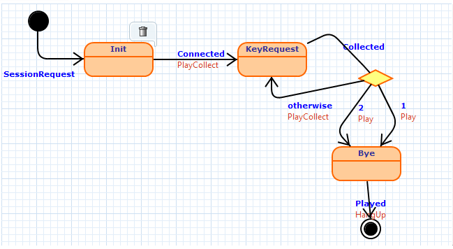

This document describes how the FD2PN component has been reused for several workflow languages. This component features a reusable transformation from a Workflow concept to a Petri net, which is able to deal with several of the patterns defined in the Workflow patterns catalog.
The menu provide links to the different artefacts of the case study.
Bender is a Domain-Specific Language to describe the workflow of telephony services. These services include include voice notes and voice-to-email services; services to inject customized background sounds in phone calls; the customization of the telephone keys to inject “voice smileys” in a conversation; as well as the typical Interactive Voice Response (IVR) applications of call centers, telebanking, credit card services, and so on.
Bender is integrated in the Umbra Designer modelling tool. A detailed description of Umbra is available in [BEL13].
The following diagram is an excerpt with the relevant elements of the Bender meta-model. The complete diagrams are also available in SVG and PNG formats.
In Bender a workflow task is represented as a State. The two subclasses InitialState and FinalState indicate the beginning and end of the execution respectivly, and at least one instance of each one must exist in any valid Bender model. Hierarchical descomposition of states is possible with CompositeState. Each State holds the transitions that stem from it. There are many subclasses of Transition, which represent the different kinds of events that may trigger the transition. In particular, Collected represents a choice in the workflow and implicitly behaves both as a transition and as a state (workflow task).
The following image shows an example model built with Bender. It represents a simple service which requests the user to press 1 or 2 to perform some action. The service initial state is Init, where the service waits for incoming calls once a new session has been established. Hence, at the top level, the event from the initial state is SessionRequest (see arrow coming into state Init). The service designer does not have to take care of handling the Bootstrap event, as the tool itself will generate code to register the listeners for the events and actions used by the service (in the example all are IVR events), and identifying the needed resources. Events are depicted in blue (bold) over the arrows, while actions are shown in red below the events. The service plays a welcome message to each incoming call. This is modelled by a Connected event and the associated PlayCollect action. This action has the additional effect to demand pressing some key on the phone keypad. Thus, the service waits in state KeyRequest until the reception of some key stroke (event Collected). If the key pressed was “1” or “2”, the service plays a different message in each case, as indicated by the Play action. Once the message associated to “1” or “2” is played (event Played in the transition going out from Bye), the service ends the call through the Hangup action.
The binding for simple tasks and transitions is straightforward ( (Node maps to State and FlowEdge to Transition), as well as for FinalTask and the isInitial attribute. The only available gateway in Bender is ExclusiveChoice, which maps to Collected. However, this binding is challenging because of the twofold nature of Collected: although it inherits from Transition in the meta-model, from the binding perspective it has to be recasted as a node whose, being the Branch classes FlowEdge. This is implemented by binding Node to Collected, FlowEdge to Branch (lines 8-9), and tweaking the result of ins and outs references (lines 26 and 38).
binding bender2fd {
enable-class-merge
concept FD : "platform:/resource/bento.examples.flow_diagrams.petrinets/metamodels/flow_concept.ecore"
metamodel BENDER : "platform:/resource/bento.examples.flow_diagrams.petrinets/bindings/bender2pn/StateMachine.ecore"
class FlowDiagram to StateMachine
class Node to State, Collected
class FlowEdge to Transition, Branch
class Task to State
class ExclusiveChoice to Collected
class FinalTask to FinalState
class ParallelSplit to NONE
class Synchronization to NONE
class MultiChoice to NONE
class SimpleMerge to NONE
feature FlowDiagram.nodes is states
feature FlowDiagram.edges = self.states->collect(s | s.outs).flatten()
feature FlowEdge[Transition]."in" is src
feature FlowEdge[Transition].out =
if self.oclIsKindOf(FD!Collected) then
self --> the transition goes to itself, but seen as a node
else
self.defaultTar
endif
feature FlowEdge[Branch]."in" = self.refImmediateComposite
feature FlowEdge[Branch].out is out
feature Task.name is nombre
feature Node[State].ins = FD!Transition.allInstances()->select(t | t.defaultTar = self)
feature Node[State].outs is outs
-- This is needed because a Collected sees itself as a transition
feature Node[Collected].ins = Sequence { self }
feature Node[Collected].outs is branches
feature Task[State].isInitial = self.oclIsKindOf(BENDER!InitialState)
feature Task[Collected].isInitial = false
feature FinalTask.isTerminating = true
}
{kind=link}
{kind=link}